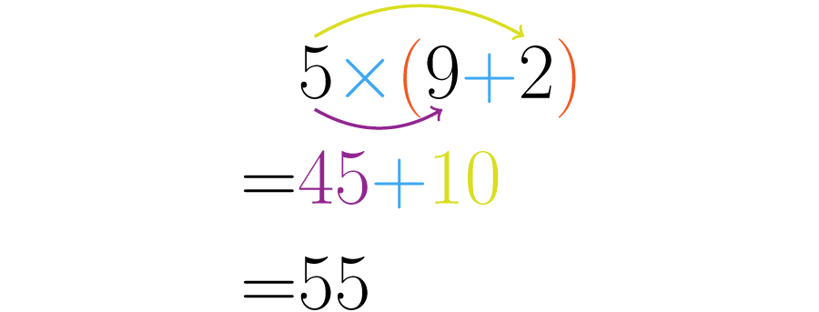

¿Qué es la multiplicación?
La multiplicación es una de las cuatro operaciones básicas de la aritmética que consiste en sumar reiteradamente un número de acuerdo a la cantidad de veces indicada por otro, por lo tanto, se considera una operación equivalente de la suma ya que el número multiplicado se puede expresar de forma equivalente en una suma
Multiplicación es un térmico con origen en el latín "multiplicatio" que permite nombrar la acción y la reacción de multiplicar.
Símbolo o signo de la multiplicación
La representación o signo de la multiplicación se conoce como “por” y se representa mediante un aspa o equis (x), también se puede representar con un punto medio.
IMPORTANTE: En ausencia de estos caracteres se suele emplear el asterisco (*) como signo de multiplicación, es común en computación para los lenguajes de programación.
Elementos de la multiplicación
Al realizar una operación de multiplicación se pueden considerar 2 elementos importantes y uno de ellos desglosa otros dos que hay que tomar en consideración:
- Coeficiente o Factores: Corresponde a los números que se multiplican y éste a su vez se descompone en dos términos:
- Multiplicando:Número que se está multiplicando o número a sumar.
- Multiplicador: Veces que debe sumarse el multiplicando.
- Producto: Es el resultado de la multiplicación.
Propiedades de la multiplicación
Existen diferentes propiedades básicas que se cumplen en una multiplicación:
- Conmutativa: El orden de los factores no altera el producto.
- Asociativa: El orden en una multiplicación de 3 o más factores no importa.
- Identidad o Elemento Neutro: "n" número multiplicado por 1 siempre va resultar ese mismo número.
- Distributiva: La suma de dos números multiplicados por un tercero es igual a la suma de cada sumando por el tercer número.
- Propiedad del cero: Todo número multiplicado por 0 es siempre 0.
- Propiedad clausurativa: El producto de dos números naturales da como resultado otro número natural.
Ejemplo:
Ejemplo:
Ejemplo:
Ahora veremos como se se hace la distribución:
Ley de los signos
"Si los signos son iguales el resultado debe ser positivo. En cambio si los signos son diferentes el resultado será negativo". En otras palabras podría decirse signos iguales se suman, signos diferentes se restan.
Tablas de multiplicar
A continuación hemos de presentar las tablas de multiplicar para poder desarollar de manera efectiva las operaciones que se nos planteen.
¿Cómo podemos multiplicar?
La mejor forma de aprender a multiplicar es utilizando cuadrados, se recomienda utilizar una libreta cuadriculada para multiplicar fila "↔" por columna "↕" así todos los cuadros contenidos dentro corresponde al valor de la multiplicación.
Herramietas para poder practicar
Hemos de presentar un simulador que se puede encontrar en la página oficial de Phet en el área de aritmética, el cual nos ayudará a poder aplicar los conocimientos adquiridos de manera dinámica.
Simulador para practicar la realización de multiplicacionesDe igual manera les presentamos una página en la cual encontrarán juegos intectativos que ayudarán en el aprendizaje del tema.
Juegos interactivos de multiplicacionesAsí mismo, hemos de presentar libros de trabajo para poder realizar ejercicios sobre multiplicaciones
Libro de trabajo para realizar ejercicios de multiplicaciones.A continuación se presetan videos que han de servir para adquirir, reforzar y aplicar los conocimientos sobre el desarrollo de la multiplicación.